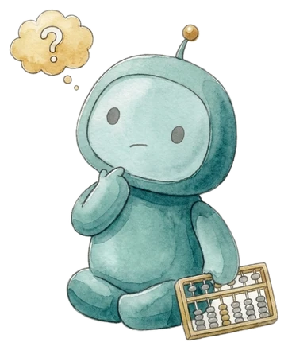

▼2.1%のような数字は「前の営業日の終値より何%動いたか」です。
相場は11/2（月）の終値。
情報提供であり、売買のおすすめではありません。
日経平均が下げた日は、僕はコーヒーを飲んで何もしない日にしています。年末の準備が気になる人は2本目をのぞいてみてください。
動いた理由：ロイターなどによると、米株安を嫌気し日経平均は続落しました。
自分の年金の見込み額をスマホで確認できる国のサービス。老後の計算はここから。

ユメカネサロン 森川 満章
情報提供であり、売買のおすすめではありません。